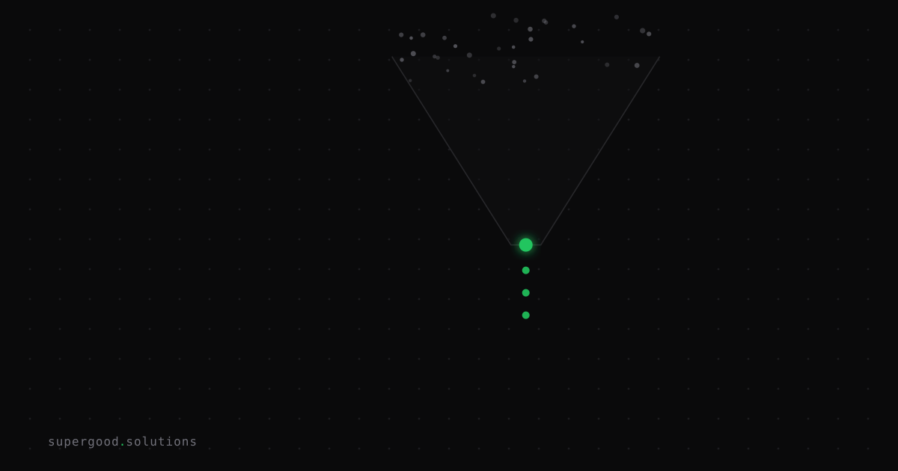

Coding Agents Are Great at the Wrong Half of Engineering
TL;DR: Coding agents crush boilerplate, migrations, and mechanical refactors — but teams keep pointing them at architectural decisions and novel debugging, where they quietly fail. The skill nobody's building is a routing rule for which half of engineering to hand off.
Key Insight
The industry pitch is "agents write code, humans review it." That framing hides the real split. Writing code was never the hard part of engineering: deciding what to build, why this approach over that one, and which constraint actually matters was always the hard part. Coding agents are excellent at the mechanical half: translating a clear spec into working code, applying a known pattern across 40 files, writing tests for behavior that's already been decided. They're weak at the judgment half: should this be a queue or a cron job, is this failure a symptom of a race condition or a schema drift, does this "quick fix" violate a constraint three teams away that isn't written down anywhere.
Independent research backs this up in an uncomfortable way. METR's 2025 randomized controlled trial had experienced open-source developers complete real tasks in their own repositories with and without AI coding assistants. Developers using the tools took 19% longer, and, more strikingly, they predicted the tools would make them 24% faster and still believed afterward that they had been sped up. The gap wasn't in typing speed. It was in developers spending review and correction time on agent output that looked plausible but required deep familiarity with the codebase to catch.
Why Teams Miss This
Most teams evaluate coding agents on demo tasks: "build a CRUD API," "add a test suite," "migrate this component library." These are exactly the tasks agents are best at, because the judgment has already been made: by the framework, the existing pattern, or the person writing the prompt. Then teams generalize that success to "the agent can own this feature" or "let the agent debug the flaky staging failure," and the judgment-heavy work gets routed to the tool anyway, because nobody defined where the line was. The failure mode isn't the agent hallucinating syntax. Modern models rarely do that anymore. It's the agent producing code that compiles, passes the tests it wrote, and encodes a design decision nobody actually made on purpose.
The second miss is subtler. Senior engineers, who are best positioned to catch bad architectural judgment, are the ones who delegate to agents most confidently, and therefore review most loosely. The METR study's participants were exactly this profile, experienced maintainers, not junior developers who'd be expected to lean on tools. Confidence in the tool scaled with seniority, but so did the blind spot.
How to Actually Do It
Split your backlog by a single question before it touches an agent: has a human already made the design decision, or does making the decision require the work?
- Route to the agent: boilerplate CRUD, test scaffolding for already-specified behavior, mechanical refactors (rename, extract, migrate a known pattern across files), converting a spec someone already wrote into a first-pass implementation, dependency upgrades with a known migration guide.
- Keep human: anything where the fix requires figuring out why something is broken in a system with implicit constraints (race conditions, cross-service failures, "why did this regress only in prod"), any change touching a shared abstraction where the blast radius isn't obvious from the diff, and any task where the acceptance criteria is "use your judgment."
A concrete workflow teams are adopting. Write the design decision as a short doc or even a few bullet points before opening the agent, not a full spec, just "we're using a queue here because X, not a cron job, because Y." Then hand the agent the decision, not the ambiguity. If you find yourself unable to write that paragraph, that's the signal the task belongs to a human first, agent second.
# Rough triage checklist before assigning a task to a coding agent
1. Can I state the design decision in 2-3 sentences?
-> No: do this part yourself first.
2. Does fixing this require knowing WHY the system behaves this way,
not just WHAT the correct behavior should be?
-> Yes: keep it human, or pair (human debugs, agent implements the fix).
3. Is the blast radius of this change contained to what's in the diff?
-> No: human review before merge is non-negotiable, agent or not.What We've Learned
The next experiment worth running isn't "which model is smarter." It's measuring how much senior review time a team spends per agent-generated PR versus a human-written one, split by task category (mechanical vs. judgment-heavy). If review time on judgment-heavy agent PRs isn't dramatically higher than on mechanical ones, that's the tell that review has gotten complacent, not that the agent got better.
Sources
- Study: METR — Measuring the Impact of Early-2025 AI on Experienced Open-Source Developer Productivity
- Commentary: AI Snake Oil — Arvind Narayanan and Sayash Kapoor
Have a specific workflow in mind?
Bring it to a Quick Scan — a live working session where we'll tell you honestly whether it should be an agent, a workflow, or left alone, before you spend a dollar building it. You get 3 prioritized recommendations on the call, a one-page summary after, and the $500 credited toward any engagement within 30 days.
Get new posts + practical agent-ops notes
One email when something new goes up. No nurture sequence, no spam — unsubscribe whenever you want.